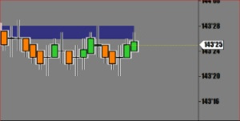
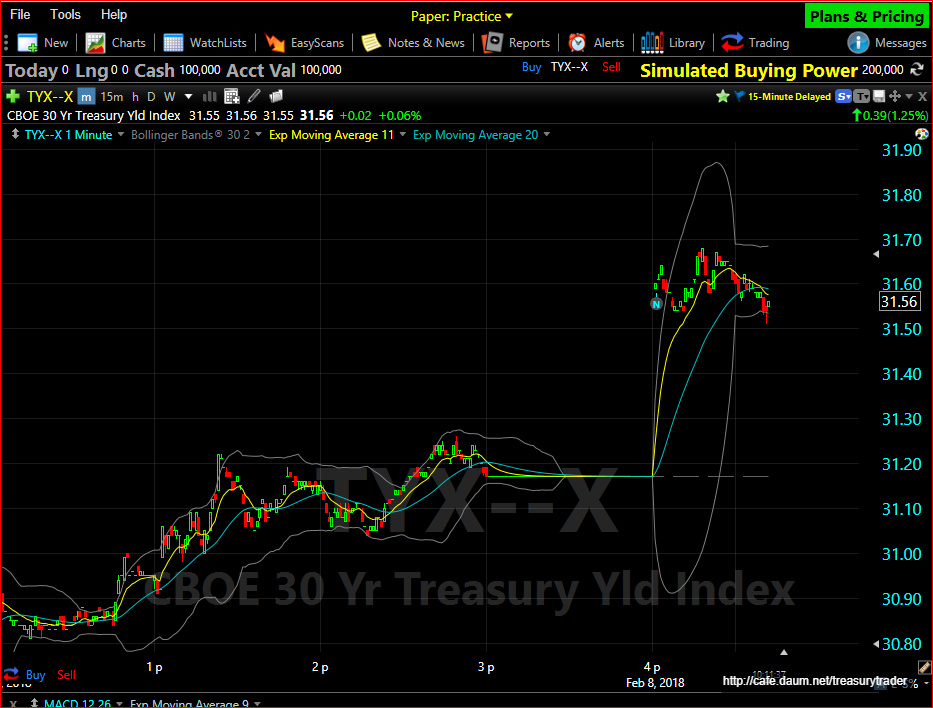
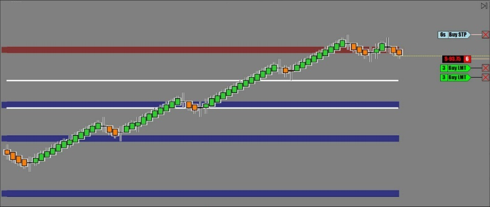
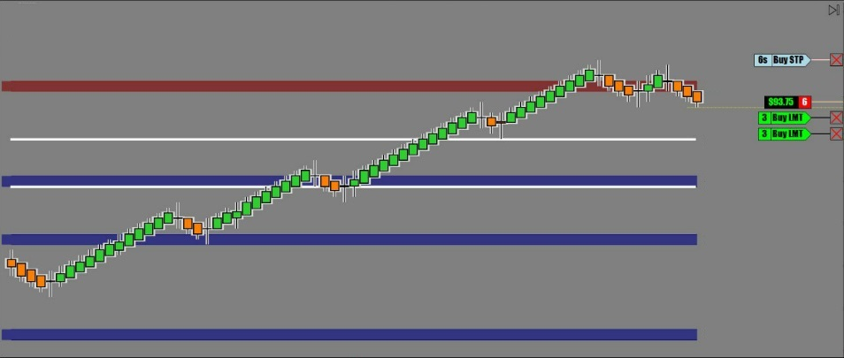
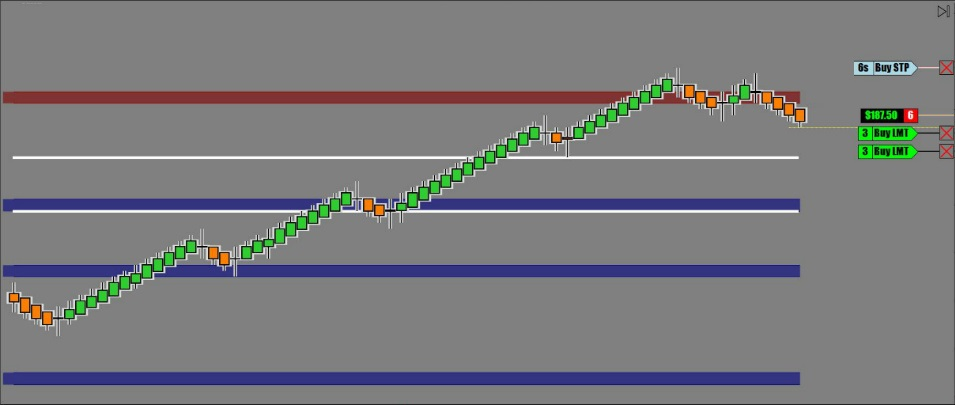
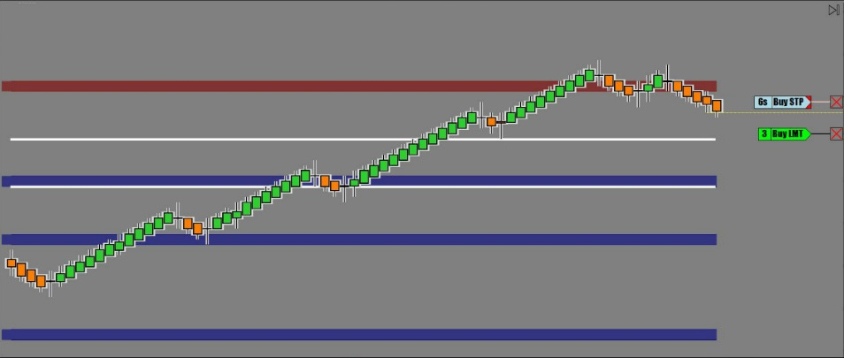
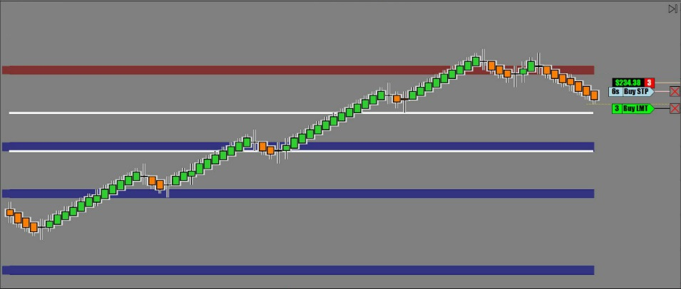
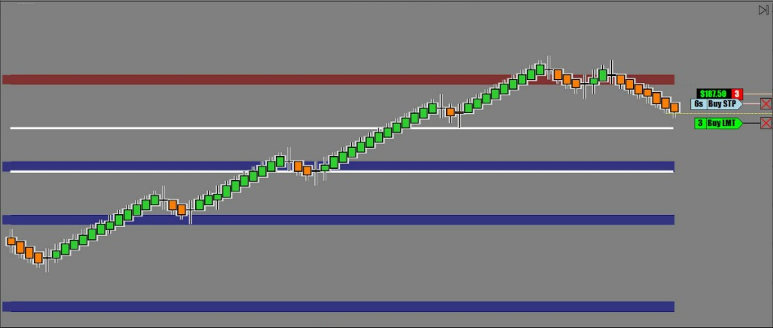
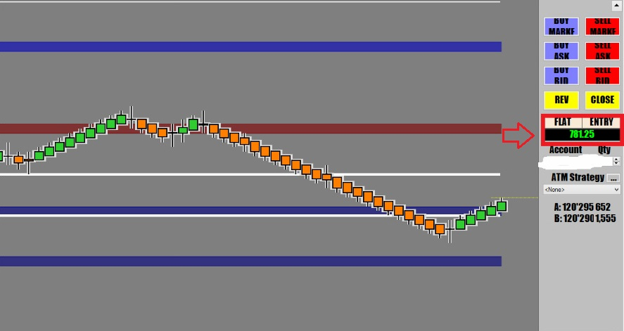

해외선물 - [ZB] 짝궁뎅이 매도진입
새벽 2시에 잠깐 매매해서 껌값 벌고 관망중임
장외시장에서는 거래량도 적고 움직임도 정상적이지 못하기 때문에
여간해서는 매매를 하지않는게 원칙임. 만약 하게되도 적은양으로 2 lot 정도로 간보기 정도..
지금현재 장이 오픈했는데도 전혀 움직일 생각들을 안하고 있음
작은 박스권안에서 진동중임

30년만기 국채 이자율은 하락으로 조금 가는듯하지만 거의 Flat이고..
좀 더 기다려 봐야할 듯..

결국 기다리던중 증시가 무너지면서 장이 널을 뛰기 시작함
오늘은 Ultra Bond와 10년물 ZN 까지 골고루 매매를 했음
장이 정상이 아닌 날은 매매량을 확 줄여서 조심해야 함
상승하다 헉헉대며 오늘의 메인 피봇에서 짝궁뎅이 만들면서 하락하는 순간 진입



일차 수익실현/ 손절주문 전진배치 -수익지키기


손절주문 바짝 따라붙기

불안정한 장세에 적은양으로 몇번 매매 적은 수익

오늘매매 수익 $781.25
오늘매매요약
* 짝궁뎅이 발생 매도진입
* UB ZN ZB 한번씩 모두 매매